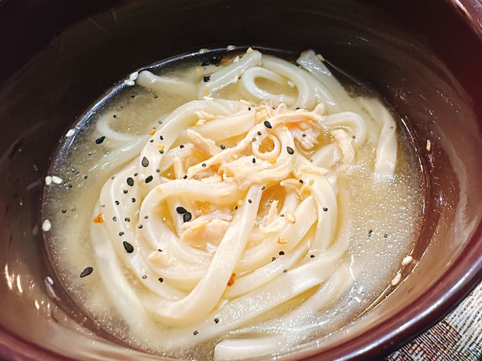

Miso Chicken Noodle Soup

Description
This miso chicken noodle soup, with thick, chewy udon noodles and a savory miso broth,
is a tasty—and very easy—remake of traditional chicken noodle soup.
Ingredients
- 3 cups of water
- 450g frozen udon noodles
- 230g rotisserie chicken, shredded
- 2 tbsp white miso paste
- Everything bagel seasoning, to taste
Steps
- In a saucepan over medium high heat, heat water to boiling. Add udon noodles.
Cook until noodles are softened, 4 to 5 minutes.
- Add rotisserie chicken. Turn heat to low. Remove 2 to 3 tablespoons water, and stir miso paste into water until smooth.
Mix diluted miso paste back into noodles. Cook for 2 to 3 minutes.
- Ladle soup into bowls and garnish with everything bagel seasoning.
Return to Odin Recipies